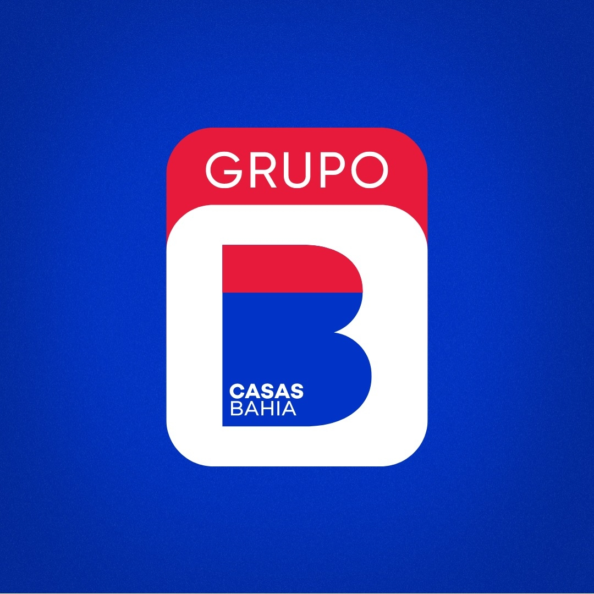
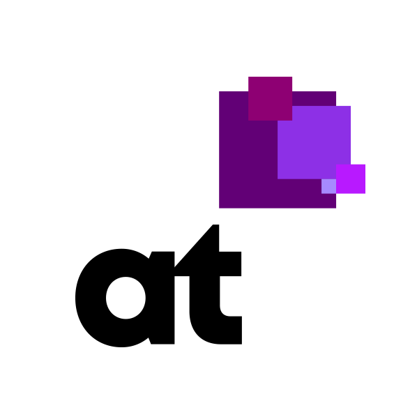
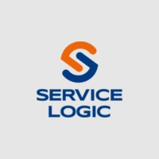

I am a web developer with 9 years of experience in various technologies. With 9 years of experience, I have honed my skills in a wide range of technologies, from Web Forms to .NET Core. My career has spanned across diverse industries, including private investment, software houses, transportation and logistics, public road authorities, land mapping companies, and retail. My diverse background allows me to bring a unique perspective to any project, blending best practices from various fields to deliver high-quality results. I am passionate about continuous learning and staying at the forefront of technology trends, ensuring that I can provide innovative solutions to meet evolving business needs. This is my portfolio where you can see some of my projects and skills.
Education
-
 Universidade Vila Velha - UVV
Universidade Vila Velha - UVV
Bachelor's Degree in Computer Science
2014 - 2019
Experiences
-
QUBIT POWERHOUSE
Backend Developer (Remote)
August 2024 - April 2025 (Contract)
Ireland
Qubit Powerhouse is a software house headquartered in Ireland, specializing in the development of diverse solutions tailored to meet the needs of various industries across the market. -

GRUPO CASAS BAHIA
FullStack .NET Developer ----> Senior FullStack Software Developer (Remote)
December 2021 - Present
São Paulo, Brazil
Support and development of functionalities for a system focused on the life cycle of orders for the brands covered by Grupo Casas Bahia (Casas Bahia, Extra, Ponto Frio). -

AGROTOOLS
FullStack .NET Developer (Remote)
October 2021 - December 2021 (3 months)
São Paulo, Brazil
Support and development of functionalities for a geolocation system aimed at the agribusiness sector. -
VENTURIS FINANCIAL
FullStack .NET Developer (Remote)
February 2021 - October 2021 (9 months)
United States
Support and development of system functionalities focused on the area of American investments (private equity). -

SERVICE LOGIC
.NET Back-end Developer
October 2020 - February 2021 (5 months)
Espírito Santo, Brazil
Support ERP system aimed at the transport and logistics sector. Development of new functionalities for managing transport, routes, vehicles among other areas within the branch. -
AUTONOMOUS DEVELOPER
Autonomous .NET Developer (Remote)
October 2019 - October 2020 (1 year 1 month)
Brazil
Development and support for systems, demands and projects as a freelancer, without employment. C# and PHP. -
GLOBAL HITSS
.NET Developer (Outsourced in DER-ES)
December 2017 - October 2019 (1 year 11 months)
Vitória, Brazil
Support for intranet web systems, support for the DER-ES website (Departamento de Edificações e de Rodovias do Estado do Espírito Santo), development of new functionalities in ticket management systems, carrying out automated tests on the internal system, database modeling and migration, requirements gathering and error correction. -
Departamento de Edificações e de Rodovias do Espírito Santo - DER-ES
.NET Developer
June 2016 - December 2017 (1 year 7 months)
Espírito Santo, Brazil
Support for intranet web systems, support for the DER-ES website (Departamento de Edificações e de Rodovias do Estado do Espírito Santo), development of new funcionalidades in ticket management systems, carrying out automated tests on the internal system, database modeling and migration, requirements gathering and error correction.
Technical Skills | Frameworks | Tools
- AWS
- .NET Core
- .NET Framework
- C#
- HTML
- React Native
- Node.js
- CSS
- MVC & MVVM
- JavaScript
- LinQ
- Ajax
- Dapper
- AngularJS
- Web APIs
- JQuery
- SQL Server
- Razor Pages
- Migrations
- MySQL
- Postman
- Docker
- Redis
- Github
Organizational Skills | Tools | Analysis tools | Devops
- CI/CD
- Jira
- DynaTrace
- Scrum
- Grafana
- Kanban
- Azure Devops
- AWS
- Teams
- Fiddler
- Slack
- GitFlow
- Confluence
Projects
Simple_API_Assessment
API that contains the main operations (CRUD) for applicants utilizing actions, migrations and the best pratices.
Design-Patterns
A solution that contains several projects with real examples of the use of design patterns.
Contact
Email: dpassosnasc@gmail.com
LinkedIn: linkedin.com/in/diego-nascimento-net
Github: github.com/diegonascimento-p